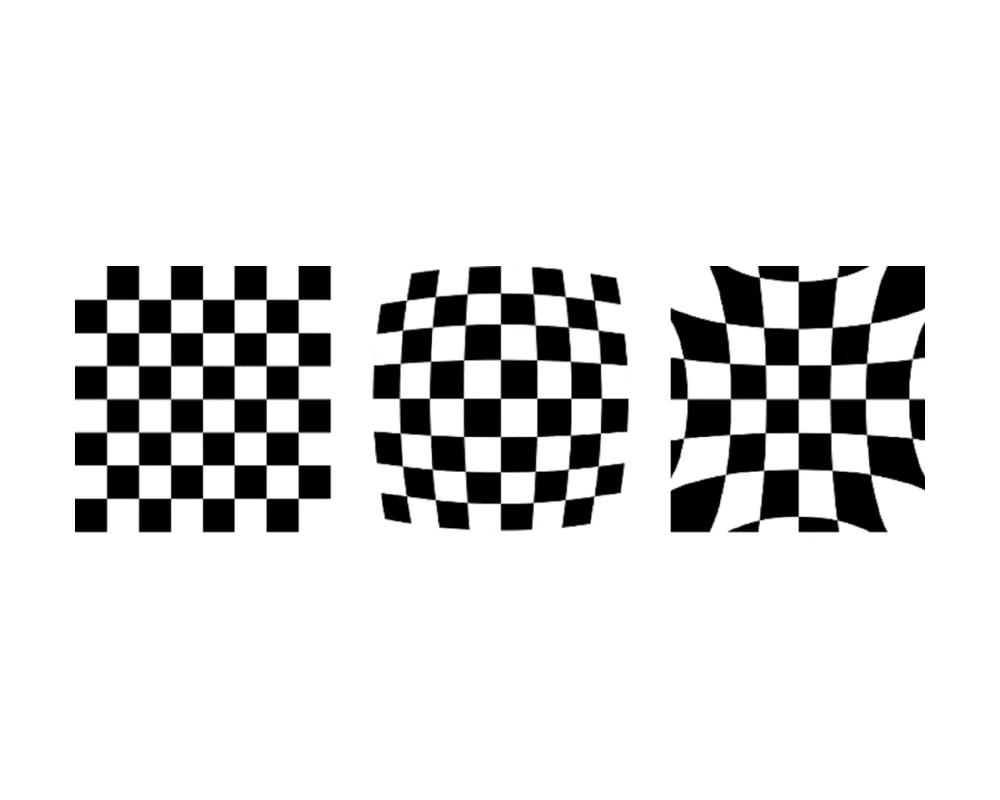
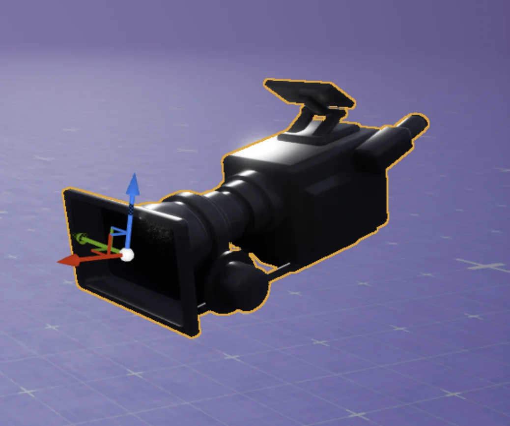
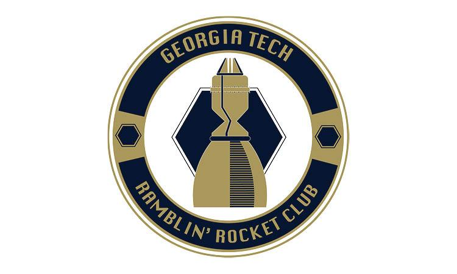

Georgia Tech • B.S. Aerospace Engineering • December 2026
Engineering for exploration
I'm an aerospace engineering student at Georgia Tech (GPA 3.38; HOPE Scholarship; Dean's List). My experience spans NASA Human Landing System lunar navigation simulation, cryogenic test operations, and systems engineering research. I enjoy connecting simulation, software, and physical systems to solve aerospace problems.
My recent work includes a SysML-based Europa mission communications model at the Aerospace Systems Design Laboratory and an award-winning NASA L'SPACE proposal selected for $10,000 in continuation funding.
At NASA Marshall Space Flight Center, I'm contributing to lunar Terrain Relative Navigation (TRN) simulation for the Human Landing System. My work focuses on realistic camera imagery, lunar terrain and lighting models, and simulation workflows that support guidance and navigation testing.
Projects & Technical Skills
Explore my current technical focus areas:
⚙Simulation Integration
Integrating Unreal Engine imagery with a six-degree-of-freedom (6-DoF) guidance, navigation, and control simulation. This work involves co-simulation, debugging, image-quality checks, and verification of simulation behavior.
◈Lunar Terrain & Lighting
Working with lunar digital elevation models (DEMs) and albedo data to improve simulated terrain and surface reflectance. Key skills include terrain visualization, material and lighting workflows, and validation of rendered scenes.
◎Camera & Image Modeling
Exploring the Brown–Conrady camera distortion model to represent departures from an ideal pinhole camera. The radial terms k1 and k2 describe how image points shift with distance from the optical center, helping assess the realism of simulated images.
r2 = x2 + y2xd = x (1 + k1r2 + k2r4)yd = y (1 + k1r2 + k2r4)
Here x and y are normalized, undistorted image coordinates. This is the radial-only form; the full Brown–Conrady model can also include tangential distortion coefficients.

Ideal grid vs. radial distortion

Camera-model visualization
▦Simulation & Monte Carlo Testing
Supporting Linux-based and parallel simulation workflows to make navigation testing more scalable and repeatable. This involves cross-platform development, troubleshooting, and Monte Carlo simulation concepts for evaluating system behavior.
✦Tools & Skills
Unreal Engine
6-DoF / GNC Simulation
MATLAB / Simulink
Linux
Lunar DEMs & Albedo
Camera Modeling
Debugging & Verification
Monte Carlo Methods
May 2026 - August 2026
Undergraduate Research Assistant ASDL, MBSE Branch
Europa Submarine Model — Team M102. As part of a conceptual mission inspired by Europa Clipper and SWIM, our team modeled six spacecraft and submarine subsystems in MagicDraw using SysML. I developed the communications subsystem to study whether science data could be transmitted from Europa to Earth while accounting for radio power consumption.
Built block definition and parametric diagrams, linked six governing constraints covering antenna gain, free-space path loss, received power, link quality, link margin, and communications power draw, and solved a subsystem instance using ParaMagic. The illustrative model produced a positive communication link margin under its stated assumptions.
MagicDrawSysMLParametric ModelingParaMagicRF Link Budget
Regulated liquid nitrogen pressure, fill level, and venting to maintain cryogenic test chamber stability during overnight rocket-engine operations. Followed formal cryogenic test procedures and safety protocols, monitored real-time subsystem telemetry, and escalated off-nominal conditions to test campaign leads.
January 2026 - May 2026
Lead Systems Engineer
NASA L'SPACE MCA
Developed a preliminary mission concept in the 15-week Mission Concept Academy, following NASA mission life-cycle practices. Led systems engineering work, conducted subsystem trade studies, and developed spacecraft configurations using Siemens NX and planetary data analysis with JMARS.
August 2025 - Present
Proposal Writing & Evaluation
NASA L'SPACE NPWEE
Selected for NASA's national proposal development and evaluation academy sponsored by Marshall Space Flight Center. Co-authored an award-winning proposal selected for $10,000 in continuation funding, continued project development, and trained in evaluating proposals against NASA solicitation review criteria.
August 2025 - December 2025
Guidance, Navigation & Control Ramblin' Rocket Club

Updated GNCSIM with a calibrated actuator model and validated closed-loop response against static-fire data. Implemented actuator modeling in flight software with deflection and rate limits, verifying hardware-in-the-loop and software-in-the-loop command tracking.